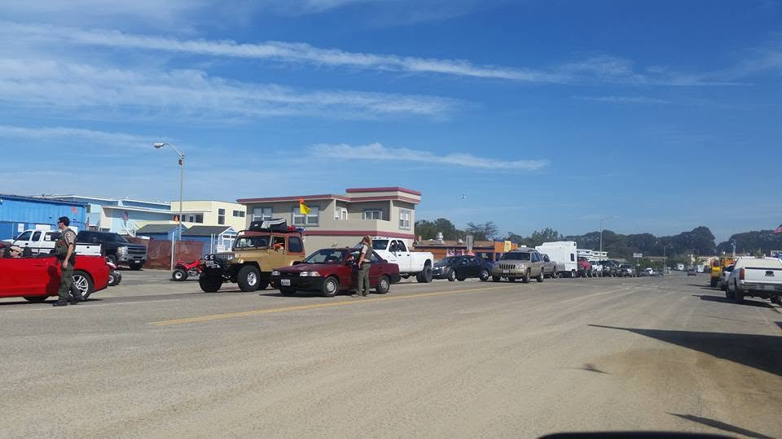

News & Events
What's Happening at the Dunes
Official State Parks releases, advance pass alerts, local events, and the Central Coast coverage that actually affects riders and campers. Checked daily, no fluff.
Nothing in this category right now. Check back soon.
Straight from the source
Official releases come from State Parks' Oceano Dunes page. We check park and local sources daily and post anything that affects your trip.